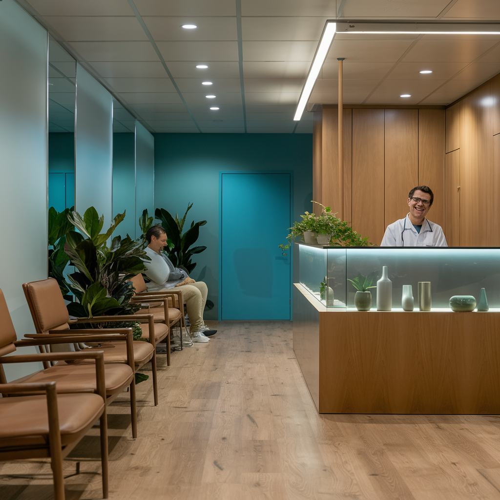

Clínica Vida & Saúde
Atendimento Médico
Na Clínica Vida & Saúde, nosso compromisso é proporcionar um atendimento médico de alta qualidade, centrado no paciente. Localizada no coração da cidade, nossa clínica oferece uma ampla gama de serviços especializados, com o objetivo de promover e manter o seu bem-estar de forma integral e personalizada.
Equipe de Profissionais
Contamos com uma equipe de profissionais altamente qualificados, incluindo médicos experientes, enfermeiros dedicados e especialistas em diversas áreas da saúde. Cada membro de nossa equipe é selecionado com base em sua experiência, habilidades e dedicação ao cuidado dos pacientes, garantindo que você receba o melhor tratamento possível.
Ambiente Acolhedor
Nosso ambiente moderno e acolhedor é projetado para proporcionar conforto e tranquilidade, desde a recepção até a consulta final. Investimos em tecnologia de ponta e equipamentos modernos para assegurar diagnósticos precisos e tratamentos eficazes.
Serviços e Prevenção
Oferecemos uma variedade de serviços, incluindo consultas médicas gerais e especializadas, exames laboratoriais e de imagem, além de programas de prevenção e bem-estar. Na Clínica Vida & Saúde, acreditamos que a saúde vai além do tratamento de doenças; é uma jornada contínua de cuidado e prevenção.
Cuidado Humanizado
Estamos aqui para apoiar você em cada etapa de sua jornada de saúde, com um atendimento que é ao mesmo tempo profissional e humanizado. Venha conhecer a Clínica Vida & Saúde e descubra como podemos ajudá-lo a alcançar e manter uma vida saudável e plena.